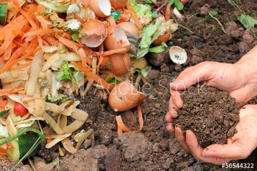

Nepal is an agricultural country.The main occupation of the people in Nepal is agriculture.Almost 80% population of Nepal are involved in agriculture. So, lots of agricultural wastes(biodegradable wastes like rotten fruits and vegetables,rice straw,household wastages etc.)are produced day by day in a huge amount.These wastes are thrown away by the farmers as these wastes are not useful for them.This has also been the main cause for the increasing pollution in Nepal. So,The main objective of this website is to utilize these agricultural wastes for the production of organic fertilizers and distribute to the farmers in a cheap cost. Furthermore ,the main motive of our team to develop this website to link the farmers with different agricultural NGOs and INGOs in a path to a clean country.
Best Organic Fertilizer

An organic fertilizer is a plant fertilizer that is derived from organic sources. Organic fertilizers can range from organic compost
to cow manure, but they must be derived from all-organic sources.
Organic fertilizers differ from chemical fertilizers in that
Modern Agricultural System
Technology has turned farming into a real business, now farmers have electrified every process, a consumer can place an order directly online, and the product will be transported from the farm to the consumer in time when it's still fresh. This saves the farmer money and it cuts out mediators.
Latest Agricultural news
Present era is an era of Information and Communication Technology (ICT). It is more interactive and can render information as per the need of ultimate users and. ensures the possibility for quick information gathering, Present era is an era ICT. information gathering, Present era is
Best Agricultural Training

Farmer training course Nepal Nepal Innovative Agriculture Group(NIAG) organize farmer training programs to teach organic farming techniques on different topics according to the subject of interest. There are 1 weeks to 1 years.training programs to teach organic organic farming techniques better.
Agricultural job

BE PART OF SOMETHING ASTONISHING! NIAG offers exciting employments to those who are passionate and are determined to make positive changes in their community. We are committed to the principles of workplace diversityworkplace diversity workplace diversity diversity.employments
Digital Marketing and Market report
Digital farming is applying precision location methods and decision quality agronomic information to illuminate, predict, and affect the continuum of cultivation issues across the farm. Here is a look at each part of the definition in a very well manner. Precision is about geo-location
@ copyright 2019 || Designed by Innovative Team